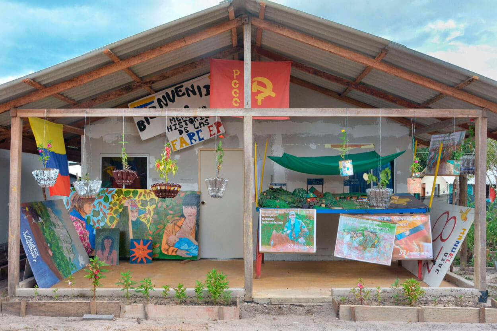

La Reincorporación: un municipio, dos ETCR y todos los retos
Uno de los espacios del ETCR ‘Jaime Pardo Leal’ de Colinas al que más dedicación han puesto los excombatientes. El lugar funciona como guardería para cuidar la creciente población infantil y también como sitio de reunión.
El objetivo del Acuerdo es que a corto y largo plazo los ex combatientes construyan proyectos de vida como lo haría cualquier ciudadano. Por eso la reincorporación implica atención en salud, acompañamiento psicosocial, educación, apoyos económicos excepcionales y transitorios para su estabilización económica y apoyos para la construcción de iniciativas individuales y asociativas. Todo esto lo deben recibir en San José del Guaviare, un municipio que enfrenta muchas dificultades para apoyar el proceso.
Los excombatientes de Colinas y Charras estaban en las montañas del departamento del Guaviare. Por eso, en estricto sentido no son población nueva para el territorio, pero el hecho de concentrarlos en dos veredas de San José del Guaviare produjo un gran impacto al municipio.
Los asentamientos en los que se convirtieron los ETCR no estaban previstos en el ordenamiento territorial de ninguno de los veinticinco municipios en los que se crearon, y el esfuerzo que debe hacer la capital del Guaviare es mayor, al tener que albergar dos de ellos. Desde su creación la garantía de servicios básicos y atención a los ex combatientes se convirtieron en un reto para las autoridades municipales.
Para muchos excombatientes asentarse en estos en ETCR no era solo una obligación para dejar sus armas en cumplimiento del Acuerdo, sino también su única posibilidad de vida una vez honrado ese compromiso. Desde su llegada a Colinas y a Charras tenían muy claro que el objetivo de su reincorporación era crear condiciones idóneas en estos espacios para que allí pudieran “estudiar, recrearse, enaltecerse culturalmente, sentirse productivos e impulsar su proyecto político para ser transformadores sociales”, tal como señala Nelson Enrique Díaz Osorio, coordinador del ETCR de Colinas, a quien sus compañeros aún se refieren como “Iván Alí”, su alías de comandante en los días de la guerra.
Los excombatientes asentados en San José del Guaviare afirman que tienen una larga trayectoria de estrecha relación con la naturaleza, y manifiestan tener compromiso para protegerla. Sus reglamentos de convivencia en Colinas son estrictos en este sentido, lo cual es relevante en un departamento que según reportes del Instituto de Hidrología, Meteorología y Estudios Ambientales (Ideam) concentra alrededor del 20 por ciento de las áreas deforestadas en el país.
Aunque están aferrados al territorio manifiestan sus inconformidades por el bajo cumplimiento a sus expectativas en materia de participación y el que a su juicio es un lento avance del proceso de reincorporación. También hacen un llamado de atención a las autoridades por lo que consideran una intención de involucrarlos, como informantes, en el conflicto que aún se vive contra los grupos armados organizados residuales que operan en el departamento. Por eso piden que todos entiendan que para ellos la guerra ya terminó.
En la Alcaldía de San José del Guaviare saben que las posibilidades de desarrollo en los dos ETCR del municipio son distintas. De acuerdo con Severo Guerrero Díaz, Secretario Administrativo y de Gobierno del municipio, “mientras en Colinas la calidad de la tierra ofrece oportunidades para trabajarla y cultivarla, en Charras a pesar de haber un territorio más amplio, la tierra no brinda alternativas productivas”.
En Colinas los excombatientes están organizados alrededor de la generación de proyectos productivos agrícolas, pero en Charras no tienen esta posibilidad. Por eso, ante esta y otras dificultades, el 28 de noviembre de 2017 cerca de 250 personas que se encontraban en la zona campamentaria de Charras dejaron el lugar.
En su momento desde el ETCR de Colinas los excombatientes emitieron un comunicado en solidaridad con esta situación en el que expresaban: “Los militantes del ETCR Jaime Pardo Leal de colinas Guaviare, nos solidarizamos con nuestros camaradas del ETCR Marco Aurelio Buendía de charras. Esto ante la problemática derivada de la deficiente administración de los espacios territoriales”.
Esta situación la reafirma el Secretario Administrativo y de Gobierno del San José del Guaviare, Severo Guerrero Díaz para quien: “el Gobierno nacional se ha quedado corto en su respuesta a los excombatientes porque la inversión social a esta población que quiere trabajar y generar sus propios ingresos no se ha hecho de manera inmediata”.
La Reincorporación también es política
Lo que habitualmente se habría entregado de manera individual a dos excombatientes, hoy funciona como espacio común en dónde principalmente los jóvenes del ETCR “Jaime Pardo Leal” de Colinas se reúnen a impulsar su proyecto político.
El Acuerdo permitió la creación del partido político Fuerza Alternativa Revolucionaria del Común (Farc), a quien el Consejo Nacional Electoral reconoció personería jurídica el 31 de octubre de 2017. Además, se otorgaron cinco curules en la Cámara de Representantes y cinco en el Senado de la República a miembros de este partido.
La Corte Constitucional en la Sentencia C – 674 de 2017 aclaró las condiciones para que los miembros de la Farc puedan participar en política y señaló que deben someterse a los órganos que integran el Sistema Integral de Verdad, Justicia, Reparación y No Repetición, comprometiéndose a contribuir a la verdad, reparar a las víctimas y a no reincidir. Esto deben hacerlo de forma progresiva y en la oportunidad que corresponda, según el diseño del proceso y la entrada en funcionamiento de los diferentes componentes de este Sistema.
En la práctica, la participación en política está mediada por el compromiso de los excombatientes de someterse a la Jurisdicción Especial para la Paz (JEP), así como atender todos los llamados que a futuro hagan la Comisión para el Esclarecimiento de la Verdad (CEV) y la Unidad de Búsqueda de Personas Dadas por Desaparecidas.
La JEP será la encargada de verificar si estos condicionamientos se cumplen o no y cuando imponga sanciones a excombatientes de la Farc que estén ocupando cargos de elección popular, podrá determinar si pueden seguir ejerciendo el cargo mientras cumplen la sanción.
A pesar de lo anterior, en los ETCR aún tienen dudas sobre sus posibilidades reales de participación en política. Pero se reconocen como militantes del partido y asumen su proceso de reincorporación en estos espacios como el punto de partida para materializar sus ideales políticos.
Ver Seguridad

Garantías de seguridad: la necesidad de un pacto político desde el territorio
El río Guaviare atraviesa los departamentos del Guainía, Guaviare, Meta y Vichada.
Hay muchas acciones que deben adelantarse para atacar problemas estructurales de pobreza, economías ilícitas, vacíos de poder y ausencia estatal que impiden lograr seguridad en el territorio. Las amenazas y asesinatos a líderes sociales y excombatientes de la Farc siguen ocurriendo, lo cual pone a prueba la capacidad real de respuesta del Estado y la sociedad a esta problemática.
La Oficina del Alto Comisionado de Naciones Unidas para los Derechos Humanos en Colombia (OACNUDH), registró en su informe del 2 de marzo de 2018 que, durante el 2017 hubo 121 asesinatos en el país. Estos incluyen a 84 defensores de derechos humanos que ejercían liderazgo, 23 miembros de movimientos sociales y políticos y 14 personas muertas durante protestas sociales. Según OACNUDH, durante 2017 también se registraron 36 asesinatos de ex miembros de las Farc – EP.
Organizaciones de la sociedad civil como el Instituto de Estudios para el Desarrollo y la Paz (INDEPAZ), denuncian que desde la firma del Acuerdo 299 líderes sociales y defensores de Derechos Humanos, así como 67 ex combatientes de las Farc – EP, han sido asesinados. Por eso piden un pacto político nacional para que todos los colombianos repudien la violencia en la política y exigen del Estado acciones eficaces para proteger a quienes se encuentran en riesgo.
Por su pate, el Acuerdo creó tres instancias sobre las que recae la mayor responsabilidad para intentar contrarrestar esta situación. La Comisión Nacional de Garantías de Seguridad, la Unidad Especial al interior de la Fiscalía para desmantelar las organizaciones sucesoras del paramilitarismo y el Sistema Integral de Seguridad para el Ejercicio de la Política. El Gobierno nacional dio prioridad a su implementación y expidió tres decretos con fuerza de ley que regulan su funcionamiento.
El primero fue el decreto ley 154 de 2017 que creó la Comisión Nacional de Garantías de Seguridad, a la cual se confió la labor de diseñar y hacer seguimiento a una política pública para desmantelar cualquier organización o conducta que amenace la implementación de los acuerdos.
La labor de contribuir a crear una cultura de tolerancia y solidaridad en el ejercicio de la política, brindando garantías para prevenir la estigmatización y la persecución, fue confiada al Sistema Integral de Seguridad para el Ejercicio de la Política. Esta instancia fue reglamentada en el decreto ley 895 de 2017.
La Unidad Especial al interior de la Fiscalía, se conformó por medio del decreto ley 898 de 2017 para asumir la tarea de investigar, perseguir y acusar organizaciones y conductas criminales contra las personas que participen en la implementación de los acuerdos y la construcción de la paz.
Pero el aporte de estas instancias aún no tiene un impacto significativo para enfrentar los problemas que se viven en el país y de manera particular en San José del Guaviare, donde aun no existen plenas garantías de seguridad. Allí el principal reto es la presencia de actores armados y organizaciones criminales que se oponen a la implementación del Acuerdo, así como de grupos armados organizados residuales de las Farc, que mantienen una sensación de inseguridad constante entre los habitantes del municipio.
Ver Reincorporación